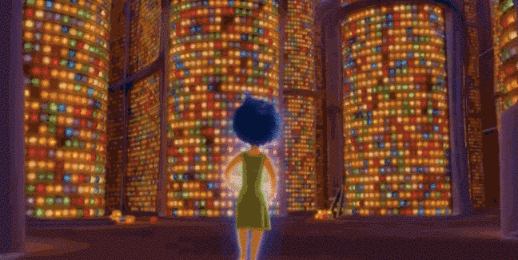

Recuerdos
Cada fotografía que guardamos es una ventana a momentos que nos marcaron, instantes que quisiéramos revivir una y otra vez. Este álbum no solo contiene imágenes, sino también pedacitos de nuestra historia, emociones que quedaron plasmadas en cada captura y recuerdos que siguen vivos en nuestras memorias. Aquí se recogen sonrisas compartidas, aventuras vividas y pequeños detalles que, aunque efímeros, forman parte de quienes somos hoy. Este álbum es un viaje a través del tiempo, un lugar donde los recuerdos cobran vida, para que siempre podamos volver a ellos y revivirlos.
